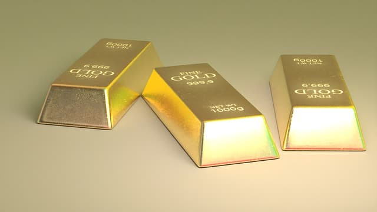

News
Services
What is the Best Way to Scrape Gold?
What is the Secret to an Impressive Gold Scraping Finish?
What is the Easiest Way to Get Started With Gold Scraping?
What is the Fastest Way to Achieve Professional-Level Gold Scraping?
What are the Benefits of Gold Scraping Over Other Precious Metals?
What Tips and Tricks Will Make Your Gold Scraping Projects Shine Above The Rest?
How to Get the Most Out of Your Gold Scrap - Tips and Tricks!
How to Make Money With Your Gold Scrap: A Comprehensive Guide
How to Find the Best Prices for Your Gold Scrap
Uncovering New Ways to Reap Maximum Profits From Your Gold Scrap
How to Instantly Increase the Value of Your Gold Scrap
Unlocking Hidden Profit Opportunities with Your Gold Scrap
The History of Gold Scraping
Common Tools Used for Gold Scraping
Different Types of Gold Scrapes and Their Uses
Benefits of Recycling and Selling Gold Scraps
How to Find the Right Buyer for Your Gold Scraps
About Us
News
Innovative Ways to Reuse or Repurpose Gold Scrapes
Gold scrapes can be recycled in numerous ways!. With a bit of creativity and imagination, you can repurpose or reuse them to create something new. (For example,) one way to repurpose gold scraps is to make jewelry.
Posted by
on 2023-02-05
Regulations Surrounding the Purchase and Sale of Gold Scraps
The purchase and sale of gold scraps can be a very lucrative market.. However, it is important to understand the regulations (in place) surrounding this type of activity.
Posted by
on 2023-02-05
Safety Practices When Working with Gold Scraps
Lifting gold scraps can be a tricky business.. It (is) important to folllow safe lifting practices in order to avoid injury or damage.
Posted by
on 2023-02-05
Old Posts
New Posts